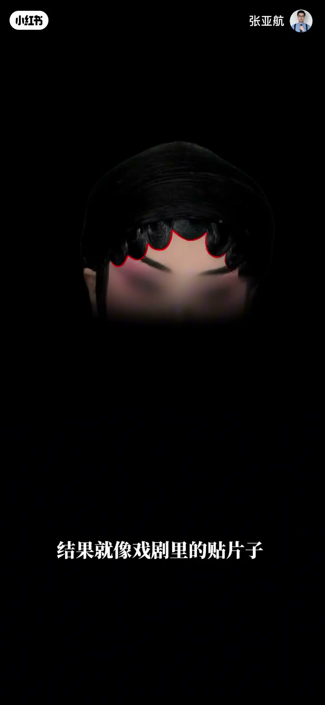
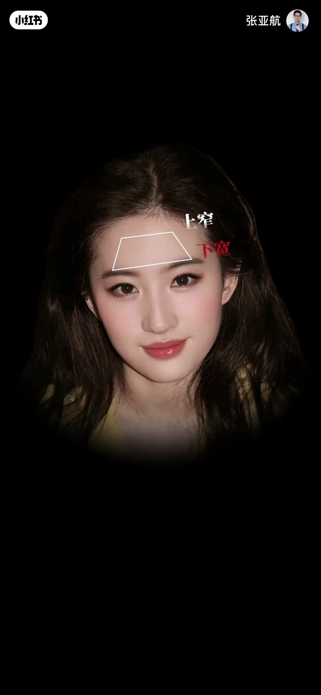
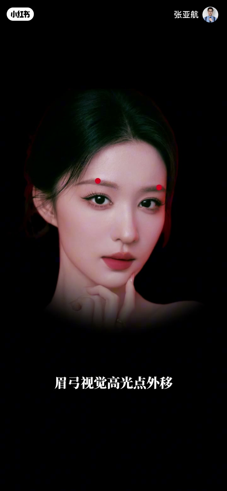
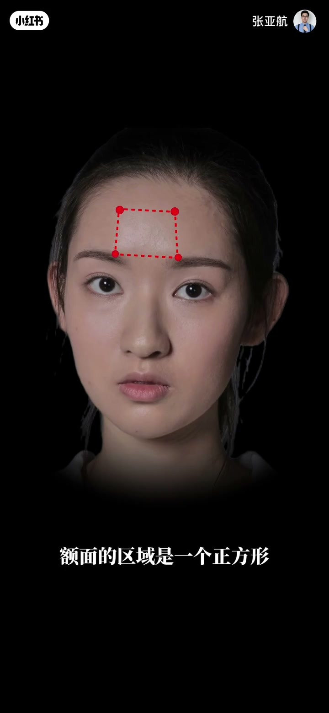

01
中文
为什么林青霞能够驾驭住花瓣型发际线，端庄不失柔美？
EN
Why can Brigitte Lin carry the petal hairline, dignified yet soft?
表达提示the petal hairline（花瓣型发际线）
Scene English · 审美 · 额头骨相
They've Truly Mastered the Forehead
🎧 语音讲解
Thesis: A Hairline Reflects the Bone Base
情境林青霞能驾驭花瓣型发际线，别人做一模一样的却违和，因为发际线形状是额头骨相的外在表现，不是装饰品。
为什么林青霞能够驾驭住花瓣型发际线，端庄不失柔美？
Why can Brigitte Lin carry the petal hairline, dignified yet soft?
表达提示the petal hairline（花瓣型发际线）
发际线的形状是额头骨相的外在表现，不是可以随便贴上去的装饰品。
A hairline's shape is the outward expression of the forehead's bone structure — not a decoration you can just paste on.
表达提示the outward expression（外在表现）
单看发际线挺好看，但放大到整张脸就是两个字：违和。
The hairline alone looks nice, but zoom out to the whole face and it's two words: jarring.
表达提示jarring（违和）
「没有那个底子」换种说法
「违和」换种说法

The Trapezoid Rule and the Brow Highlight
情境好看的额头有上窄下宽的梯形。早期林青霞梯形上宽下窄、眉弓视觉高光点靠内，额头亮面局促、钝感明显。
好看的额头都有一个上窄下宽的梯形，当这个梯形在额头上呈现得当时，额头开阔大气。
Pretty foreheads share a trapezoid that's narrow on top and wide below; when it lands well, the forehead feels open and grand.
表达提示a trapezoid（梯形）
眉弓视觉高光点的位置过于靠内，整个额头的亮面显得局促，不够大气舒展，钝感明显。
The brow's visual highlight sat too far inward, cramping the bright plane — not expansive, with an obvious dull heaviness.
表达提示the visual highlight（视觉高光点）
「开阔大气」换种说法
「钝感明显」换种说法

The Frontal Eminence: Trapezoid and Linkage
情境额结节把额头分为亮面/灰面。点位合适+眉弓高光外移→上窄下宽梯形出现→弱化脸宽；额结节包裹眉弓、眉弓呼应颧骨。反面：额结节过近+正方形额面→扁平局促显脸长；调整后正梯形+外框C包裹颧弓。
当额结节的点位调整到合适位置，眉弓视觉高光点外移，上窄下宽的梯形就出现了。
Once the eminence is set right and the brow highlight shifts outward, the narrow-top trapezoid appears.
表达提示the frontal eminence（额结节）
开阔的额头反而能够弱化脸的视觉宽度。额结节的位置能够包裹住眉弓，眉弓向下能够和颧骨相呼应。
An open forehead actually narrows the face's visual width — the eminence wraps the brow, and the brow answers the cheekbones below.
表达提示to narrow the visual width（弱化视觉宽度）
额结节和眉弓以及眼眶形成联动关系，外框C能够顺势包裹住颧弓。
The eminence, brow and eye socket form a linkage, letting outer frame C wrap the zygomatic arch in one motion.
表达提示a linkage（联动关系）
「包裹关系」换种说法
「结构舒展」换种说法

Forehead Zones and the Turn Line
情境两个骨点把额头分为额顶（承接头骨）和额面（衔接T区），形成高位收纳面中。额颞转折线（额结节+眉弓高光点）决定额头是球形还是T面。
这两个骨点把额头的正面分为上下两个区域，上面为额顶，下面为额面。
These two bone points split the forehead into an upper top zone and a lower face plane.
表达提示bone points（骨点）
额顶承接头骨，额面衔接T区，形成我们面部的高位，能够收纳我们的面中。
The top carries the skull, the plane meets the T-zone, forming the face's high level that houses the mid-face.
表达提示to house the mid-face（收纳面中）
这条线让额头有了转折，带来了光影变化，也直接决定了额头是球形还是T面。
This line gives the forehead its turn and its light-shadow shifts, and decides whether it reads as a sphere or a T-plane.
表达提示a sphere or a T-plane（球形或T面）
「面部有高低」换种说法
「转折明显」换种说法

Full Temples and the Takeaway
情境隐藏细节：颞部饱满+发型打造卢米斯之圆，不是单一高颅顶，而是模拟饱满头骨形成头包脸。结语：看不懂的调整三年后成主流。
还有个小细节就在于颞部的饱满。
There's one more small detail: full, rounded temples.
表达提示full temples（颞部饱满）
不是单一打造高颅顶，而是去模拟出饱满的头骨，形成头包脸。
It's not just building a high crown — it's mimicking a full skull so the head wraps the face.
表达提示a high crown（高颅顶）
你今天看不懂的调整，三年后会成为主流。
The adjustments you don't understand today will become mainstream in three years.
表达提示become mainstream（成为主流）
「头包脸」换种说法
「逻辑严密的思路」换种说法
q
q
q
q
q
Without the base, it reads as stage makeup on the whole face.
Single fixes ignore the eminence-brow-eye-cheek linkage.
A weak turn leaves the forehead floating above a weaker lower face.
What looks odd today often becomes the mainstream standard.